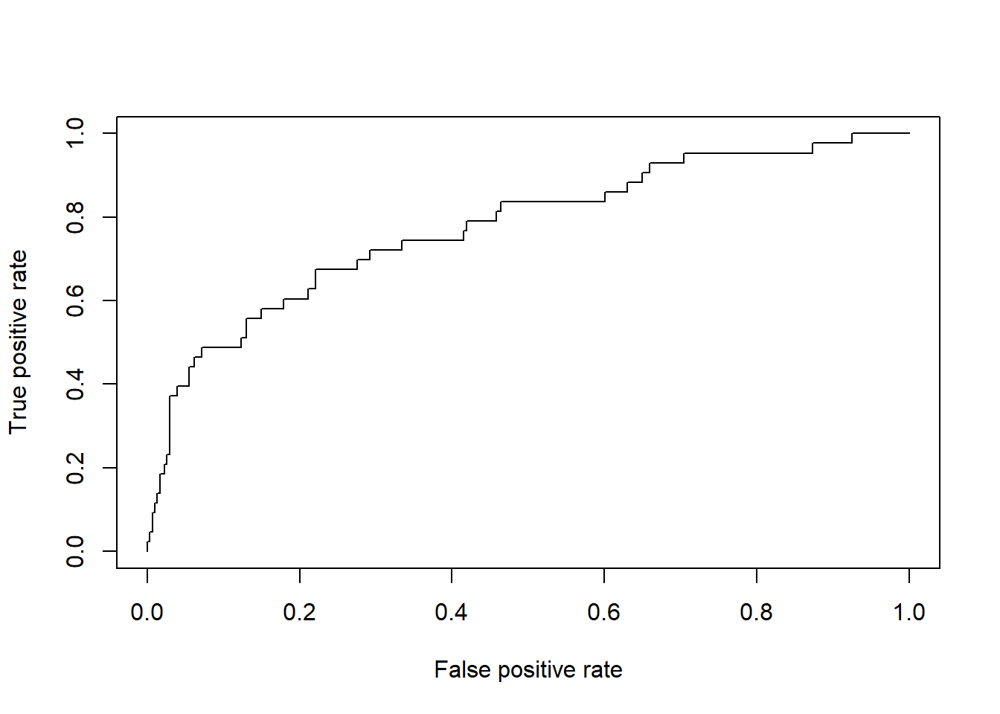

library(tidyverse)
library(stargazer)
library(ROCR)In this section, we want to generate a generalized linear model to see the relationship between patients’ mortality status and predictive variables.
convert_to_factor <- function(df, columns) {
df[columns] <- lapply(df[columns], factor)
return(df)
}
mortality_cleaned =
read_csv("mortality_data_cleaned.csv") |>
janitor::clean_names() |>
convert_to_factor(c("group", "gender", "outcome", "hypertensive",
"atrialfibrillation", "chd_with_no_mi", "diabetes",
"deficiencyanemias", "depression", "hyperlipemia",
"renal_failure", "copd"))## Rows: 1176 Columns: 51
## ── Column specification ──────────────────────────────────────────────────────
## Delimiter: ","
## dbl (51): group, id, outcome, age, gender, bmi, hypertensive, atrialfibrilla...
##
## ℹ Use `spec()` to retrieve the full column specification for this data.
## ℹ Specify the column types or set `show_col_types = FALSE` to quiet this message.mortality_complete =
mortality_cleaned |>
select(-group, -id)glm_complete = glm(outcome ~ ., data = mortality_complete, family = binomial(link = logit))stepwise_complete = step(glm_complete)stargazer(stepwise_complete, type = "text")##
## ====================================================
## Dependent variable:
## ---------------------------
## outcome
## ----------------------------------------------------
## age 0.014
## (0.009)
##
## deficiencyanemias1 -0.654***
## (0.246)
##
## renal_failure1 -1.142***
## (0.276)
##
## copd1 -1.128**
## (0.461)
##
## heart_rate 0.023***
## (0.007)
##
## diastolic_blood_pressure -0.027**
## (0.012)
##
## respiratory_rate 0.040
## (0.028)
##
## temperature -0.267
## (0.178)
##
## sp_o2 -0.097**
## (0.047)
##
## urine_output -0.0002
## (0.0001)
##
## mch 0.082*
## (0.049)
##
## mchc -0.203*
## (0.107)
##
## rdw 0.104**
## (0.052)
##
## leucocyte 0.049**
## (0.020)
##
## platelets -0.003***
## (0.001)
##
## lymphocyte -0.025
## (0.016)
##
## creatinine -0.471***
## (0.182)
##
## urea_nitrogen 0.022***
## (0.007)
##
## blood_potassium 0.413
## (0.271)
##
## blood_calcium -0.760***
## (0.209)
##
## anion_gap 0.206***
## (0.064)
##
## magnesium_ion 0.718*
## (0.431)
##
## bicarbonate -0.082**
## (0.036)
##
## pco2 0.039***
## (0.013)
##
## Constant 19.259**
## (9.598)
##
## ----------------------------------------------------
## Observations 1,176
## Log Likelihood -325.803
## Akaike Inf. Crit. 701.606
## ====================================================
## Note: *p<0.1; **p<0.05; ***p<0.01summary(stepwise_complete)##
## Call:
## glm(formula = outcome ~ age + deficiencyanemias + renal_failure +
## copd + heart_rate + diastolic_blood_pressure + respiratory_rate +
## temperature + sp_o2 + urine_output + mch + mchc + rdw + leucocyte +
## platelets + lymphocyte + creatinine + urea_nitrogen + blood_potassium +
## blood_calcium + anion_gap + magnesium_ion + bicarbonate +
## pco2, family = binomial(link = logit), data = mortality_complete)
##
## Coefficients:
## Estimate Std. Error z value Pr(>|z|)
## (Intercept) 19.2590819 9.5976046 2.007 0.044786 *
## age 0.0142918 0.0092707 1.542 0.123167
## deficiencyanemias1 -0.6541647 0.2460479 -2.659 0.007845 **
## renal_failure1 -1.1423254 0.2764017 -4.133 3.58e-05 ***
## copd1 -1.1280987 0.4614429 -2.445 0.014496 *
## heart_rate 0.0233167 0.0074780 3.118 0.001821 **
## diastolic_blood_pressure -0.0269256 0.0119484 -2.253 0.024228 *
## respiratory_rate 0.0398045 0.0276286 1.441 0.149671
## temperature -0.2672547 0.1784731 -1.497 0.134276
## sp_o2 -0.0974804 0.0470036 -2.074 0.038089 *
## urine_output -0.0001652 0.0001068 -1.546 0.122030
## mch 0.0818651 0.0494141 1.657 0.097577 .
## mchc -0.2032528 0.1071511 -1.897 0.057844 .
## rdw 0.1040846 0.0515905 2.018 0.043642 *
## leucocyte 0.0490760 0.0204623 2.398 0.016469 *
## platelets -0.0032973 0.0010162 -3.245 0.001175 **
## lymphocyte -0.0252952 0.0163700 -1.545 0.122294
## creatinine -0.4714431 0.1819376 -2.591 0.009563 **
## urea_nitrogen 0.0218553 0.0072053 3.033 0.002420 **
## blood_potassium 0.4128049 0.2706920 1.525 0.127259
## blood_calcium -0.7597361 0.2087830 -3.639 0.000274 ***
## anion_gap 0.2062723 0.0640473 3.221 0.001279 **
## magnesium_ion 0.7178665 0.4305826 1.667 0.095475 .
## bicarbonate -0.0817167 0.0357449 -2.286 0.022248 *
## pco2 0.0393260 0.0126945 3.098 0.001949 **
## ---
## Signif. codes: 0 '***' 0.001 '**' 0.01 '*' 0.05 '.' 0.1 ' ' 1
##
## (Dispersion parameter for binomial family taken to be 1)
##
## Null deviance: 931.77 on 1175 degrees of freedom
## Residual deviance: 651.61 on 1151 degrees of freedom
## AIC: 701.61
##
## Number of Fisher Scoring iterations: 6mortality_derivation =
mortality_cleaned |>
filter(group == 1) |>
select(-group, -id) glm_derivation = glm(outcome ~ ., data = mortality_derivation, family = binomial(link = logit))stepwise_derivation = step(glm_derivation)stargazer(stepwise_derivation, type = "text")##
## ====================================================
## Dependent variable:
## ---------------------------
## outcome
## ----------------------------------------------------
## age 0.025**
## (0.012)
##
## gender2 -0.377
## (0.261)
##
## hypertensive1 -0.426
## (0.279)
##
## atrialfibrillation1 0.455*
## (0.268)
##
## diabetes1 -0.479*
## (0.278)
##
## deficiencyanemias1 -0.634**
## (0.298)
##
## hyperlipemia1 -0.441
## (0.288)
##
## renal_failure1 -0.894***
## (0.333)
##
## copd1 -1.513**
## (0.617)
##
## heart_rate 0.026***
## (0.008)
##
## diastolic_blood_pressure -0.037**
## (0.015)
##
## sp_o2 -0.108**
## (0.052)
##
## mcv 0.046**
## (0.019)
##
## rdw 0.120**
## (0.057)
##
## platelets -0.002**
## (0.001)
##
## lymphocyte -0.042**
## (0.020)
##
## creatinine -0.646***
## (0.217)
##
## urea_nitrogen 0.032***
## (0.008)
##
## blood_calcium -0.942***
## (0.234)
##
## anion_gap 0.310***
## (0.075)
##
## lactic_acid 0.277*
## (0.145)
##
## pco2 0.037***
## (0.013)
##
## Constant 3.672
## (6.217)
##
## ----------------------------------------------------
## Observations 825
## Log Likelihood -228.171
## Akaike Inf. Crit. 502.343
## ====================================================
## Note: *p<0.1; **p<0.05; ***p<0.01summary(stepwise_derivation)##
## Call:
## glm(formula = outcome ~ age + gender + hypertensive + atrialfibrillation +
## diabetes + deficiencyanemias + hyperlipemia + renal_failure +
## copd + heart_rate + diastolic_blood_pressure + sp_o2 + mcv +
## rdw + platelets + lymphocyte + creatinine + urea_nitrogen +
## blood_calcium + anion_gap + lactic_acid + pco2, family = binomial(link = logit),
## data = mortality_derivation)
##
## Coefficients:
## Estimate Std. Error z value Pr(>|z|)
## (Intercept) 3.671841 6.216855 0.591 0.55477
## age 0.024527 0.011691 2.098 0.03592 *
## gender2 -0.377370 0.261083 -1.445 0.14835
## hypertensive1 -0.425550 0.279079 -1.525 0.12730
## atrialfibrillation1 0.454825 0.267560 1.700 0.08915 .
## diabetes1 -0.478653 0.278206 -1.720 0.08534 .
## deficiencyanemias1 -0.633530 0.297759 -2.128 0.03337 *
## hyperlipemia1 -0.440532 0.288308 -1.528 0.12652
## renal_failure1 -0.894474 0.333213 -2.684 0.00727 **
## copd1 -1.513432 0.617326 -2.452 0.01422 *
## heart_rate 0.025778 0.008322 3.098 0.00195 **
## diastolic_blood_pressure -0.037489 0.014559 -2.575 0.01003 *
## sp_o2 -0.107812 0.052481 -2.054 0.03994 *
## mcv 0.045993 0.019129 2.404 0.01620 *
## rdw 0.120262 0.056611 2.124 0.03364 *
## platelets -0.002308 0.001173 -1.967 0.04916 *
## lymphocyte -0.042492 0.019659 -2.161 0.03066 *
## creatinine -0.646281 0.216766 -2.981 0.00287 **
## urea_nitrogen 0.032267 0.008076 3.995 6.46e-05 ***
## blood_calcium -0.942475 0.234124 -4.026 5.68e-05 ***
## anion_gap 0.310417 0.075475 4.113 3.91e-05 ***
## lactic_acid 0.276861 0.144762 1.913 0.05581 .
## pco2 0.036983 0.013154 2.811 0.00493 **
## ---
## Signif. codes: 0 '***' 0.001 '**' 0.01 '*' 0.05 '.' 0.1 ' ' 1
##
## (Dispersion parameter for binomial family taken to be 1)
##
## Null deviance: 670.00 on 824 degrees of freedom
## Residual deviance: 456.34 on 802 degrees of freedom
## AIC: 502.34
##
## Number of Fisher Scoring iterations: 6mortality_validation =
mortality_cleaned |>
filter(group == 2) |>
select(-group, -id) predict = predict(stepwise_derivation, newdata = mortality_validation, type = "response")pred = prediction(predictions = predict, labels = mortality_validation$outcome)
roc = performance(pred, "tpr", "fpr")
auc = performance(pred, measure = "auc")@y.values[[1]]plot(roc, colorize = F)
cat('AUC of the model on validation dataset:', auc)## AUC of the model on validation dataset: 0.7757475